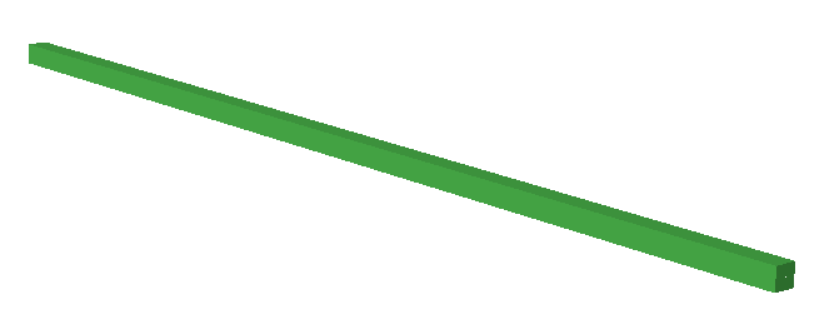
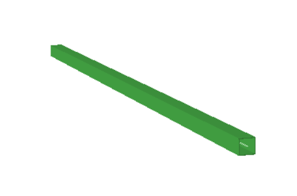
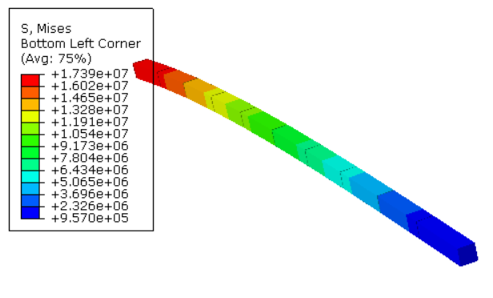
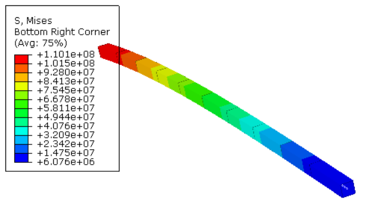

ABAQUS-ELEMENT Overlap
ABAQUS显式计算
在进行ABAQUS的显式计算时，往往存在梁单元不能rebar的问题，因为rebar关键字在模型中只适用于隐式计算，显式计算中，梁单元的rebar需要在原始混凝土单元上重叠一个钢筋单元，两单元共节点，来保证变形协调。 具体一点，可以在混凝土柱子上增加一个方管截面的钢材柱，而混凝土梁上则可以增加一个工字形截面的钢梁，等价的条件是截面的惯性矩等信息。
问题的出现
在ABAQUS CAE建模时，无法直接实现在Assembly中将两个完全重叠的梁单元merge，在merge之后，两个单元退化为一个单元，其材料和截面完全继承最近一次修改的内容，即如果先建立了混凝土梁，后建立了钢梁，然后两者merge，得到的但愿是钢梁，而这时如果你修改一下混凝土梁的截面属性，则该单元又变成了混凝土梁。这个问题网上没有找到解决方法，这里通过我自己的尝试，得到了解决。
inp文件修改
既然cae建模不行，那就直接改inp吧，举个简单的例子，一个5m长的悬臂梁，截面0.1m*0.1m，混凝土梁才用矩形截面，钢材采用方钢管截面。如图：


inp文件内容如下：
**
** PARTS
**
*Part, name=Part-3
*Node
1, 0., 0., 0.
2, 0.5, 0., 0.
3, 1., 0., 0.
4, 1.5, 0., 0.
5, 2., 0., 0.
6, 2.5, 0., 0.
7, 3., 0., 0.
8, 3.5, 0., 0.
9, 4., 0., 0.
10, 4.5, 0., 0.
11, 5., 0., 0.
*Element, type=B31
1, 1, 2
2, 2, 3
3, 3, 4
4, 4, 5
5, 5, 6
6, 6, 7
7, 7, 8
8, 8, 9
9, 9, 10
10, 10, 11
*Element, type=B31
21, 1, 2
22, 2, 3
23, 3, 4
24, 4, 5
25, 5, 6
26, 6, 7
27, 7, 8
28, 8, 9
29, 9, 10
30, 10, 11
*Nset, nset=con, generate
1, 11, 1
*Elset, elset=con, generate
1, 10, 1
*Nset, nset=re, generate
1, 11, 1
*Elset, elset=re, generate
21, 30, 1
*Elset, elset=cons, generate
1, 10, 1
*Elset, elset=res, generate
21, 30, 1
** Section: Section-2 Profile: Profile-2
*Beam Section, elset=re, material=Material-2, temperature=GRADIENTS, section=BOX
0.1, 0.1, 0.005, 0.005, 0.005, 0.005
0.,0.,-1.
** Section: Section-1 Profile: Profile-1
*Beam Section, elset=con, material=Material-1, temperature=GRADIENTS, section=RECT
0.1, 0.1
0.,0.,-1.
*End Part
**
**
** ASSEMBLY
**
*Assembly, name=Assembly
**
*Instance, name=Part-3-1, part=Part-3
*End Instance
**
*Nset, nset=Set-1, instance=Part-3-1
1,
*Nset, nset=Set-2, instance=Part-3-1
11,
*End Assembly
**
** MATERIALS
**
*Material, name=Material-1
*Elastic
3e+10, 0.2
*Material, name=Material-2
*Elastic
2e+11, 0.2
** ----------------------------------------------------------------
这里采用的是直接指定了节点之间的两个不同的单元。也可以采用elcopy指令实现。
计算结果可以明显看到相同变形下两个单元不同的应力。

